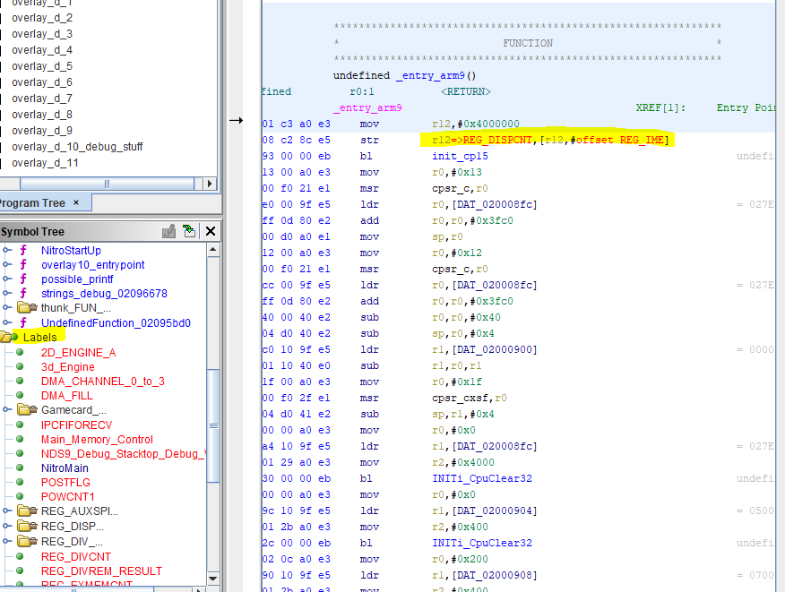
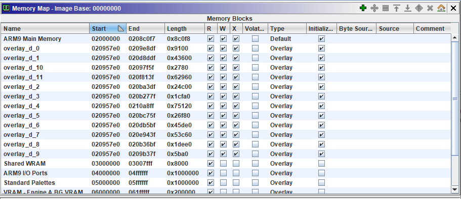
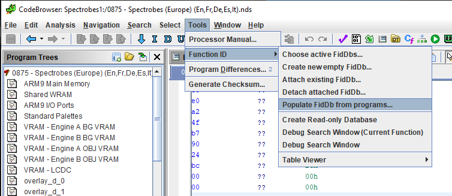
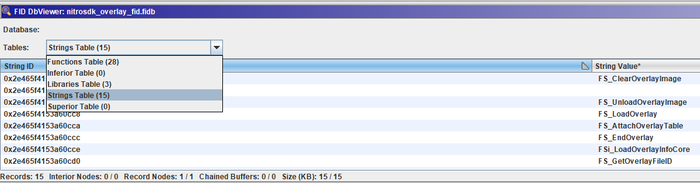

Advanced Ghidra Loader: labels, overlays and Function ID
Foundation
Last month we saw the basics of a Ghidra Loader, a type of extension for Ghidra. Now we’ll see some additional features to step up the functionality, usability and quality of our loader.
I will cover these features in increasing complexity order.
Labels
Often when working with embedded systems we find architectures that are conceptually simple. Usually, code is loaded statically (always at the same address) or libraries are static.
With microcontrollers it’s common to have memory-mapped registers to control I/O, or to control other hardware modules, like DMA, and many others.
These registers are (in the hardware) addressed using a constant physical address. In such cases, we can assign these addresses a name (the name of the register, for example) so that Ghidra will replace every reference to that address with the name, making it much easier for humans to reverse engineer and understand dissasembled and decompiled code.
public class NDSLabelList {
//This internal class represents a location of interest (registers, i/o, etc)
public class NDSLabel {
String name;
int addr;
public NDSLabel(String name, int addr) {
this.name = name;
this.addr = addr;
}
public String name() {return name;}
public int addr() {return addr;}
}
//This class uses a singleton pattern
private static NDSLabelList _instance = null;
It is convenient to create a new clase called XYZLabelList, in this case I use a Singleton pattern so that there can only be one instance of this class.
Internally it contains another class, XYZLabel, which is a class with the address of the register, and the name we will assign to it.
We will have a list of this XYZLabels.
private static List<NDSLabel> _ARM9labels = new ArrayList<NDSLabel>();
private static List<NDSLabel> _ARM7labels = new ArrayList<NDSLabel>();
private NDSLabelList()
{
/*ARM 9*/
_ARM9labels.add(new NDSLabel("REG_DISPCNT", 0x4000000));
_ARM9labels.add(new NDSLabel("REG_DISPSTAT", 0x4000004));
...
On the constructor we will add as many labels for register as we want. And finally, in our main loader’s class, we will iterate the list and register each label in Ghidra:
//Labels (REGISTERS, others, etc.)
for(NDSLabel l: NDSLabelList.getInstance().getARM9Labels())
{
api.createLabel(api.toAddr(l.addr()),l.name(),true);
}
The result? a rich and comprehensive memory map, with more readable code:

Overlays
Overlays are not rare in embedded devices with limited amount of RAM memory but with abundant ROM. The bottom line is that overlays are memory sections which location (i.e. start address and end address) is the same as other memory section, or another overlay, so one of them may overlap the other.
For example, you may have two different code routines. Let’s say both occupy 0x100 bytes, and our RAM starts at 0xA0000000. We could totally load one at 0xA0000100 and the next one at 0xA0000200. But what if we don’t have that much memory? We could use any of them until we don’t need them and then load the next one from ROM at the same address. Another example are hardware memory banks in old consoles.
Of course, in the real device, only one overlay can be loaded at the same time in main memory. But both are stored in ROM. So why not spoon-feed the reverse engineer and allow him or her to load both in Ghidra?
We can do so with just one line of code:
createInitializedBlock(program, true, "overlay_"+i, api.toAddr(overlay.RamAddress), stream, overlay.RamSize, "", "", true, true, true, log, monitor);
Just make sure that program is your loader’s Program object. “overlay_“+i is the name of the overlay (inside a for loop), then the starting address, a stream with the binary data of the overlay (this depends on your file type), the size, and a couple of flags (read/write/execute are enabled).
You can see NTRGhidra’s code for the whole picture.

Function ID, fid databases and table population
Most interesting feature that makes reversing similar samples easy is Function ID. You can use Function ID without a loader but if we pack some pre-generated function id databases (fidDb from now on) with our loader, we’ll have a much more useful software. For instance, this is a Work In Progress feature for NTRGhidra.
Ghidra’s Function ID is similar to IDA Pro’s F.L.I.R.T.. In fact, if you are moving from IDA to Ghidra, let me tell you Ghidra has an automatic utility to convert flirt to fid.
What is its purpose? It generates hashes from known functions or procedures, so that if they appear in other programs you don’t need to figure out what they do. You’ll have their name.
There are several ways to create from scratch a fidDb. Usually I document and rename a bunch of functions, and then choose the option “populate fidDb from program”. Another way is to generate them from .o files (aka: libraries!).

This will generate a .fidb file that at the end contains all our precious reversed functions.

There are some cases where functions cannot be added to a database (for example, a very small function) but for most programs it does an excellent job.
At the moment I am generating full sets of function signatures for NTRGhidra.
Bonus: quirks of Java
If you are trying to implement some extra, custom routine into your Loader, like for example, decompression of some parts of the file, or overlays, you may find some very curious Java behaviours.
- Java does not have support for unsigned data types
Yup, this is specially inconvenient if you are moving from other compiled languages or porting code. The best way to support greater values than an unsigned int is to use the long type.
- Java does not have real support for bitwise operations on types other than int or long.
If you try to perform some bitwise operation (shifts, and, or,..) on the byte type it will be silently casted to an int before the operation. Beware this may cause problems if your byte should be treated as unsigned, but its most significant bit is a 1. Signeds are encoded using 2’s complement so when casting to an int it will be bit-extended with 1’s, not 0’s
- The unsigned right shift
An attempt to reduce the mess with incorrect signed shifts was done introducing the >>> operator, which is a right shift that always extends with 0’s. On the other hand, the >> will extend bits using either 0’s or 1’s depending on the sign of the integer.
Summing Up
These Ghidra features can possibly make your Loader or Ghidra extension much more helpful and serviceable. Let me know down in the comments your tricks or favorite Ghidra extension features!